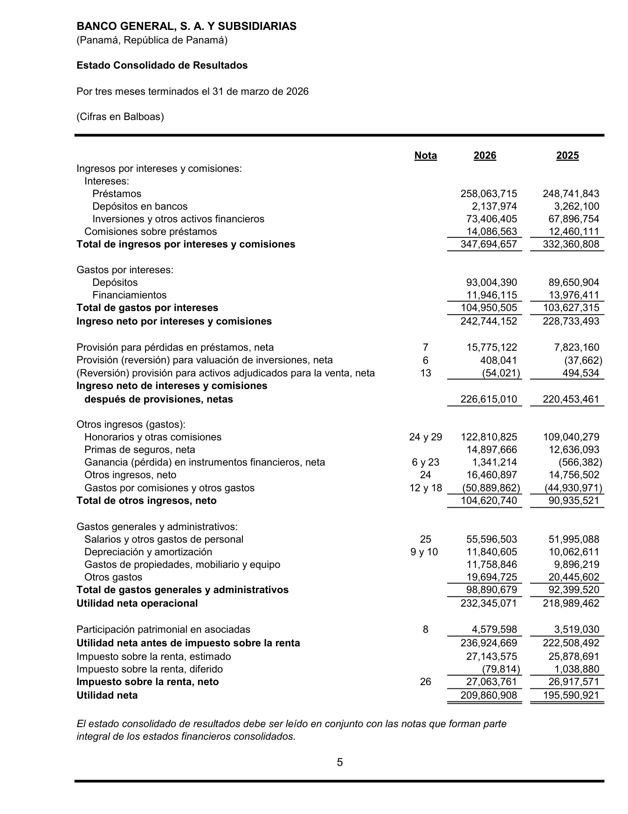
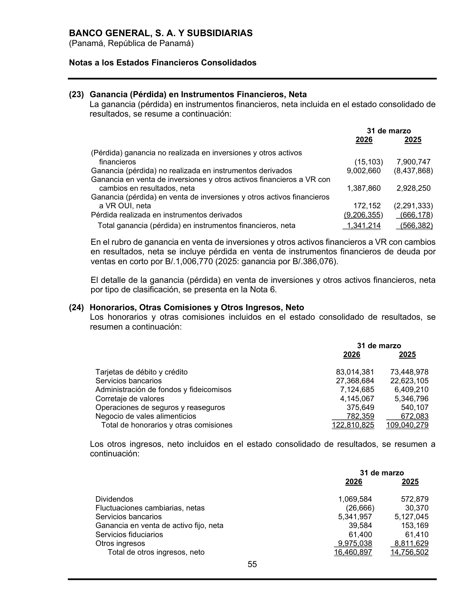
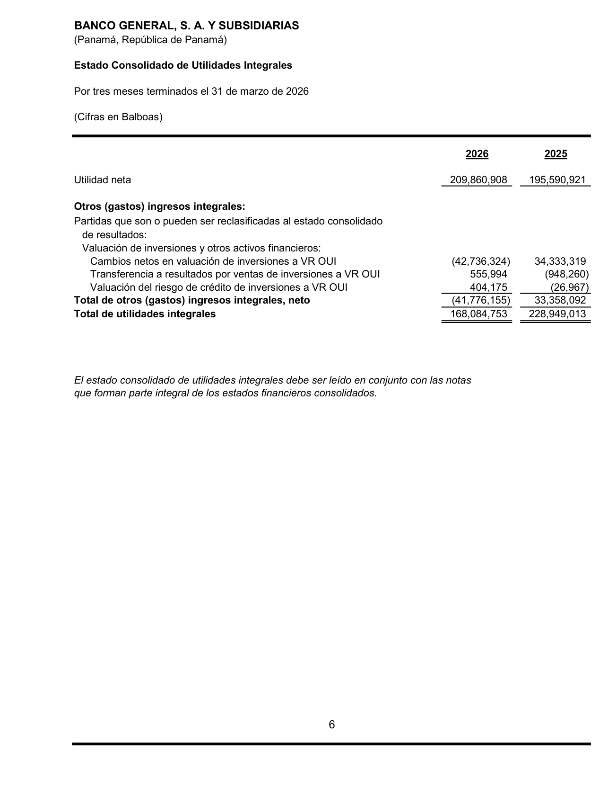
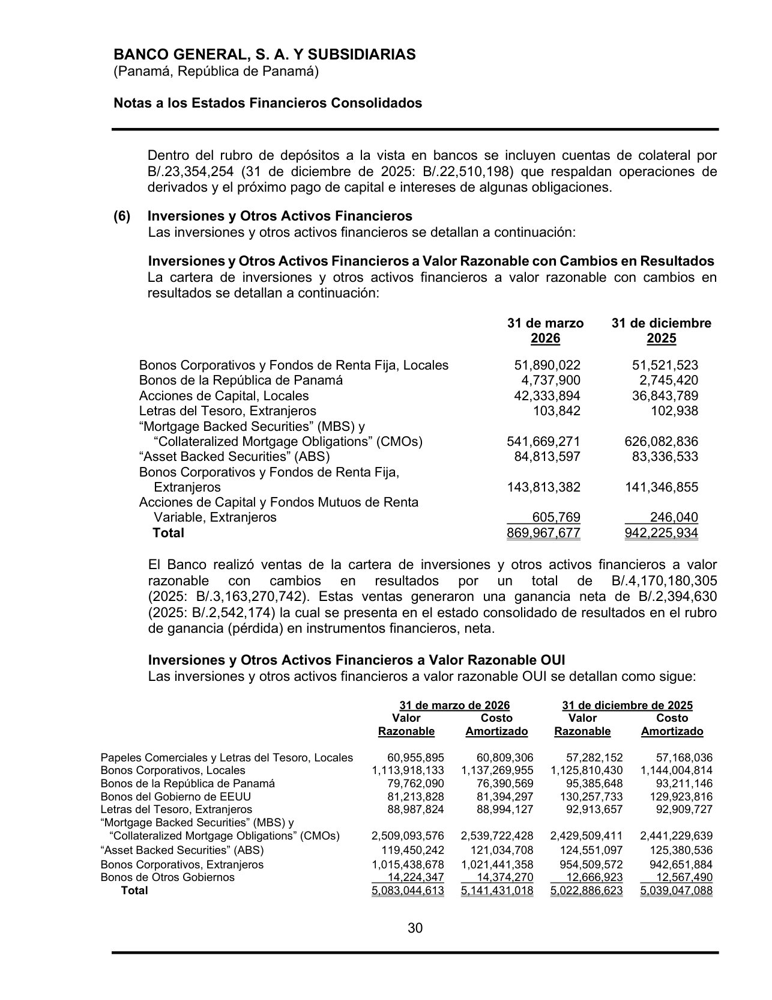
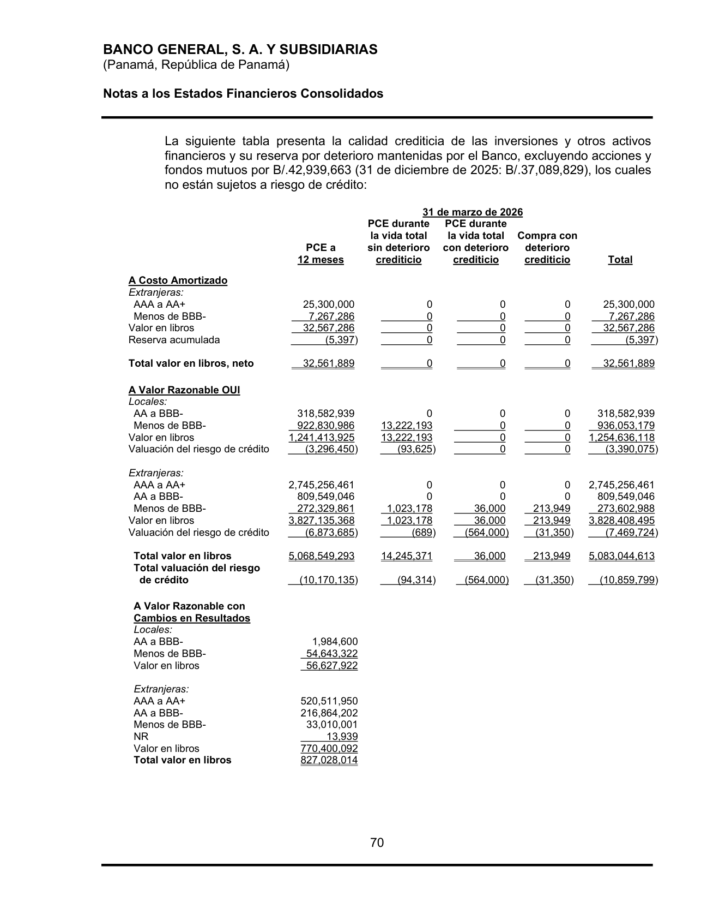

<title>Banco General — Renglones con ganancias del portafolio de inversiones</title>
<meta name="viewport" content="width=device-width, initial-scale=1">
<style>
<style>
:root{
  --plane:#eef1f5; --surface:#f8f9fb; --surface-2:#ffffff;
  --ink:#0f1620; --ink-2:#475062; --muted:#8a91a0; --hair:#dde2ea; --hair-2:#c7cedb;
  --accent:#2a78d6; --accent-soft:#e7f0fc;
  --s1:#2a78d6; --s2:#1baf7a; --s3:#c98a00; --s6:#e34948;
  --good:#0a8a3a; --warn:#b8770a; --crit:#c0392b;
  --good-bg:#e4f4ea; --warn-bg:#fbf1dc; --crit-bg:#fae5e2; --info-bg:#e7f0fc;
  --shadow:0 1px 2px rgba(15,22,32,.04),0 8px 24px rgba(15,22,32,.06);
  --mono:ui-monospace,"SF Mono","SFMono-Regular",Menlo,Consolas,monospace;
  --sans:system-ui,-apple-system,"Segoe UI",Roboto,sans-serif;
}
@media (prefers-color-scheme:dark){
  :root{
    --plane:#0a0c10; --surface:#12161d; --surface-2:#171c25;
    --ink:#f2f5fa; --ink-2:#a8b0c0; --muted:#6b7382; --hair:#242a34; --hair-2:#2f3744;
    --accent:#4a90e2; --accent-soft:#16273c;
    --s1:#3987e5; --s2:#199e70; --s3:#c98500; --s6:#e66767;
    --good:#3bbf6a; --warn:#e0a52c; --crit:#e8756a;
    --good-bg:#12291b; --warn-bg:#2a2210; --crit-bg:#2c1815; --info-bg:#16273c;
    --shadow:0 1px 2px rgba(0,0,0,.3),0 10px 30px rgba(0,0,0,.4);
  }
}
:root[data-theme="dark"]{
  --plane:#0a0c10; --surface:#12161d; --surface-2:#171c25;
  --ink:#f2f5fa; --ink-2:#a8b0c0; --muted:#6b7382; --hair:#242a34; --hair-2:#2f3744;
  --accent:#4a90e2; --accent-soft:#16273c;
  --s1:#3987e5; --s2:#199e70; --s3:#c98500; --s6:#e66767;
  --good:#3bbf6a; --warn:#e0a52c; --crit:#e8756a;
  --good-bg:#12291b; --warn-bg:#2a2210; --crit-bg:#2c1815; --info-bg:#16273c;
}
:root[data-theme="light"]{
  --plane:#eef1f5; --surface:#f8f9fb; --surface-2:#ffffff;
  --ink:#0f1620; --ink-2:#475062; --muted:#8a91a0; --hair:#dde2ea; --hair-2:#c7cedb;
  --accent:#2a78d6; --accent-soft:#e7f0fc;
  --s1:#2a78d6; --s2:#1baf7a; --s3:#c98a00; --s6:#e34948;
  --good:#0a8a3a; --warn:#b8770a; --crit:#c0392b;
  --good-bg:#e4f4ea; --warn-bg:#fbf1dc; --crit-bg:#fae5e2; --info-bg:#e7f0fc;
}
*{box-sizing:border-box}
html{scroll-behavior:smooth}
body{margin:0;background:var(--plane);color:var(--ink);font-family:var(--sans);
  font-size:16px;line-height:1.58;-webkit-font-smoothing:antialiased}
.wrap{max-width:1000px;margin:0 auto;padding:0 24px}
h1,h2,h3{text-wrap:balance;line-height:1.18;margin:0}
.mono{font-family:var(--mono)}
a{color:var(--accent)}

header.top{position:sticky;top:0;z-index:40;background:color-mix(in srgb,var(--plane) 90%,transparent);
  backdrop-filter:blur(10px);border-bottom:1px solid var(--hair)}
.top-in{display:flex;align-items:center;gap:14px;height:56px;max-width:1000px;margin:0 auto;padding:0 24px}
.brandmark{display:flex;align-items:center;gap:10px;font-weight:680;letter-spacing:-.01em;font-size:15px}
.brandmark .dot{width:9px;height:9px;border-radius:50%;background:var(--accent);box-shadow:0 0 0 4px var(--accent-soft)}
.top-spacer{flex:1}
.top-in a{font-size:13px;color:var(--ink-2);text-decoration:none}
.top-in a:hover{color:var(--accent)}

.hero{padding:44px 0 26px;border-bottom:1px solid var(--hair)}
.eyebrow{font-family:var(--mono);font-size:12px;letter-spacing:.08em;text-transform:uppercase;color:var(--accent);font-weight:600}
h1{font-size:33px;font-weight:720;letter-spacing:-.02em;margin:12px 0 10px}
.lede{font-size:17px;color:var(--ink-2);max-width:74ch}
.meta-row{display:flex;flex-wrap:wrap;gap:8px;margin-top:18px}
.pill{font-size:12.5px;background:var(--surface-2);border:1px solid var(--hair);border-radius:999px;padding:4px 12px;color:var(--ink-2)}
.pill b{color:var(--ink)}

section{padding:34px 0;border-bottom:1px solid var(--hair)}
.sec-head{display:flex;align-items:baseline;gap:12px;margin-bottom:14px}
.sec-num{font-family:var(--mono);font-size:12px;color:var(--muted);font-weight:600}
h2{font-size:23px;font-weight:680;letter-spacing:-.01em}
h3{font-size:15.5px;font-weight:640;margin:20px 0 7px}
p{margin:0 0 12px}
.sub{color:var(--ink-2)}

.tbl-scroll{overflow-x:auto;margin:14px 0;border:1px solid var(--hair);border-radius:12px}
table{border-collapse:collapse;width:100%;font-size:14px;background:var(--surface-2);min-width:640px}
th,td{text-align:left;padding:9px 13px;border-bottom:1px solid var(--hair);vertical-align:top}
thead th{background:var(--surface);font-weight:640;font-size:12px;color:var(--ink-2);
  text-transform:uppercase;letter-spacing:.03em}
tbody tr:last-child td{border-bottom:none}
.num{text-align:right;font-variant-numeric:tabular-nums;font-family:var(--mono);font-size:13px;white-space:nowrap}
.tot td{font-weight:700;background:color-mix(in srgb,var(--accent-soft) 55%,transparent)}
.sub-row td{background:color-mix(in srgb,var(--surface) 60%,transparent);font-size:13px}
.sub-row td:first-child{padding-left:26px;color:var(--ink-2)}
.neg{color:var(--crit)}
.mini{font-size:12px;color:var(--muted)}

.badge{display:inline-block;font-size:11px;font-weight:640;padding:1px 8px;border-radius:6px;font-family:var(--mono);letter-spacing:.02em;white-space:nowrap}
.b-pl{background:var(--accent-soft);color:var(--accent)}
.b-oci{background:var(--warn-bg);color:var(--warn)}
.b-prov{background:var(--crit-bg);color:var(--crit)}
.b-yes{background:var(--good-bg);color:var(--good)}
.b-no{background:var(--crit-bg);color:var(--crit)}

.callout{display:flex;gap:13px;padding:15px 17px;border-radius:12px;margin:16px 0;font-size:14.5px;line-height:1.5}
.callout .ic{flex:0 0 24px;width:24px;height:24px;border-radius:50%;display:grid;place-items:center;font-weight:700;font-size:14px;color:#fff}
.co-key{background:var(--crit-bg)} .co-key .ic{background:var(--crit)}
.co-info{background:var(--info-bg)} .co-info .ic{background:var(--accent)}
.co-good{background:var(--good-bg)} .co-good .ic{background:var(--good)}

.map{display:grid;grid-template-columns:repeat(auto-fit,minmax(220px,1fr));gap:14px;margin:18px 0}
.mapc{background:var(--surface-2);border:1px solid var(--hair);border-radius:14px;padding:15px 17px;box-shadow:var(--shadow)}
.mapc .t{font-size:12px;color:var(--muted);text-transform:uppercase;letter-spacing:.04em;font-weight:600;margin-bottom:8px}
.mapc ul{margin:0;padding-left:16px;font-size:13.5px;color:var(--ink-2)}
.mapc li{margin:4px 0}
.mapc li b{color:var(--ink)}
.mapc .amt{font-family:var(--mono);font-size:12.5px}

.ev-grid{display:grid;grid-template-columns:repeat(auto-fill,minmax(170px,1fr));gap:12px;margin-top:12px}
.ev{display:block;background:var(--surface-2);border:1px solid var(--hair);border-radius:10px;overflow:hidden;text-decoration:none;color:inherit;box-shadow:var(--shadow)}
.ev img{width:100%;display:block;aspect-ratio:3/4;object-fit:cover;object-position:top;background:#fff;border-bottom:1px solid var(--hair)}
.ev .cap{padding:8px 10px;font-size:12px;color:var(--ink-2)}
.ev .cap b{display:block;color:var(--ink);font-size:12.5px;margin-bottom:1px}
.ev:hover{border-color:var(--accent)}

.kbd{font-family:var(--mono);font-size:12.5px;background:var(--surface);border:1px solid var(--hair-2);border-radius:5px;padding:1px 6px}
footer{padding:30px 0 60px;color:var(--muted);font-size:13px}
@media(max-width:640px){h1{font-size:26px}.hero{padding:32px 0 22px}}
</style>
</style>

<header class="top">
  <div class="top-in">
    <span class="brandmark"><span class="dot"></span>Banco General · Ganancias de inversiones</span>
    <span class="top-spacer"></span>
    <a href="index.html">← Radar de Inversiones</a>
  </div>
</header>

<main class="wrap">
  <div class="hero">
    <div class="eyebrow">Nota de trabajo · mapa de renglones</div>
    <h1>¿Dónde aparecen las ganancias del portafolio de inversiones?</h1>
    <p class="lede">Rastreo, renglón por renglón, de <b>todos los lugares del último estado financiero de Banco General</b> (Interino 1T-2026, 31-mar-2026, no auditado) donde se reconoce una <b>ganancia, ingreso o resultado del portafolio de inversiones en valores</b>. El renglón a vigilar aquí es <b>"Ganancia (pérdida) en instrumentos financieros, neta"</b>, que en Banco General está <b>mezclado con derivados</b> — hay que abrir la Nota 23 para separar lo que es cartera de valores de lo que es cobertura con derivados.</p>
    <div class="meta-row">
      <span class="pill">Emisor: <b>Banco General, S.A. y Subsidiarias</b></span>
      <span class="pill">Corte: <b>31-mar-2026</b> (interino, no auditado)</span>
      <span class="pill">Período: <b>3 meses (1T)</b></span>
      <span class="pill">Moneda: <b>USD</b> (B/. a la par)</span>
    </div>
  </div>
  <section id="mapa">
    <div class="sec-head"><span class="sec-num">TL;DR</span><h2>El mapa completo — 4 lugares</h2></div>
    <p class="sub">El resultado del portafolio se reparte en <b>tres líneas del estado de resultados</b> (interés, ganancia mixta con derivados, y una provisión de valuación), <b>tres líneas del ORI (patrimonio)</b>, más el desglose de la Nota 23. A diferencia de Banistmo, aquí lo que contamina el renglón mixto son <b>instrumentos derivados</b>, no divisas.</p>
    <div class="map">
      <div class="mapc">
        <div class="t">① Estado de Resultados · interés</div>
        <ul>
          <li><b>Inversiones y otros activos financieros</b> <span class="amt">73,406,405</span> — cupón/interés de la cartera</li>
        </ul>
      </div>
      <div class="mapc">
        <div class="t">② Estado de Resultados · valuación/venta</div>
        <ul>
          <li><b>Ganancia (pérdida) en instrumentos financieros, neta</b> <span class="amt">1,341,214</span> — mixto con derivados; Nota 23 (portafolio ≈ <b>1,544,909</b>)</li>
        </ul>
      </div>
      <div class="mapc">
        <div class="t">③ Resultado Integral (ORI)</div>
        <ul>
          <li><b>Cambios netos en valuación a VR OUI</b> <span class="amt neg">(42,736,324)</span> — no realizada</li>
          <li><b>Transferencia a resultados por ventas VR OUI</b> <span class="amt">555,994</span> — reciclaje</li>
          <li><b>Valuación del riesgo de crédito VR OUI</b> <span class="amt">404,175</span></li>
        </ul>
      </div>
      <div class="mapc">
        <div class="t">④ P&amp;L · provisión de valuación (netea)</div>
        <ul>
          <li><b>Provisión (reversión) para valuación de inversiones, neta</b> <span class="amt neg">(408,041)</span> — Nota 6</li>
        </ul>
      </div>
    </div>
    <div class="callout co-key"><span class="ic">!</span>
      <div><b>El renglón que hay que abrir: "Ganancia (pérdida) en instrumentos financieros, neta" (1,341,214) es mixto con <u>derivados</u>.</b> Solo ~<b>1,544,909</b> es del portafolio (venta a VR resultados 1,387,860 + venta VR OUI 172,152 − valuación no realizada 15,103). Los <b>instrumentos derivados</b> aportan una pérdida neta de <b>(203,695)</b> (no realizada +9,002,660 − realizada 9,206,355). Sin abrir la Nota 23, esta línea <i>subestima</i> el resultado del portafolio, porque los derivados netean en negativo. Los <b>dividendos (1,069,584)</b> y las <b>fluctuaciones cambiarias (26,666)</b> NO están aquí — viven en la Nota 24 ("Otros ingresos").</div>
    </div>
  </section>
  <section>
    <div class="sec-head"><span class="sec-num">01</span><h2>Estado de Ganancias o Pérdidas (P&amp;L)</h2></div>
    <p class="sub">Página impresa 6 / PDF p.25. Dos renglones cargan resultados del portafolio: uno de <b>interés</b> y uno de <b>valuación/venta</b> (mixto con derivados).</p>
    <div class="tbl-scroll"><table>
      <thead><tr><th>Renglón (P&amp;L)</th><th class="num">1T-2026</th><th class="num">1T-2025</th><th>Tipo</th><th>¿Solo portafolio?</th></tr></thead>
      <tbody>
        <tr><td><b>Ingresos por intereses — "Inversiones y otros activos financieros"</b></td><td class="num">73,406,405</td><td class="num">67,896,754</td><td><span class="badge b-pl">Interés</span></td><td><span class="badge b-yes">Sí — cartera</span></td></tr>
        <tr><td><b>Ganancia (pérdida) en instrumentos financieros, neta</b> <span class="mini">(Notas 6 y 23)</span></td><td class="num">1,341,214</td><td class="num neg">(566,382)</td><td><span class="badge b-pl">Valuación/venta</span></td><td><span class="badge b-no">No — mixto (derivados)</span></td></tr>
      </tbody>
    </table></div>
    <p class="mini">La provisión de valuación de inversiones (408,041) también pega en la utilidad neta — se detalla en el bloque ④. El interés "Inversiones y otros activos financieros" es la base del <i>yield</i> de la cartera.</p>
  </section>
  <section>
    <div class="sec-head"><span class="sec-num">02</span><h2>Nota 23 — desglose de "Ganancia (pérdida) en instrumentos financieros, neta"</h2></div>
    <p class="sub">PDF p.75. Aquí se ve qué parte de los 1,341,214 es realmente del portafolio de inversiones y qué parte es de <b>instrumentos derivados</b>.</p>
    <div class="tbl-scroll"><table>
      <thead><tr><th>Componente</th><th class="num">1T-2026</th><th class="num">1T-2025</th><th>¿Portafolio de inversiones?</th></tr></thead>
      <tbody>
        <tr><td>(Pérdida) ganancia no realizada en inversiones y otros activos financieros</td><td class="num neg">(15,103)</td><td class="num">7,900,747</td><td><span class="badge b-yes">Sí — valuación cartera</span></td></tr>
        <tr><td>Ganancia (pérdida) no realizada en instrumentos derivados</td><td class="num">9,002,660</td><td class="num neg">(8,437,868)</td><td><span class="badge b-no">No — derivados</span></td></tr>
        <tr><td>Ganancia en venta de inversiones a VR con cambios en resultados, neta</td><td class="num">1,387,860</td><td class="num">2,928,250</td><td><span class="badge b-yes">Sí — venta FVTPL</span></td></tr>
        <tr><td>Ganancia (pérdida) en venta de inversiones a VR OUI, neta</td><td class="num">172,152</td><td class="num neg">(2,291,333)</td><td><span class="badge b-yes">Sí — venta FVOCI</span></td></tr>
        <tr><td>Pérdida realizada en instrumentos derivados</td><td class="num neg">(9,206,355)</td><td class="num neg">(666,178)</td><td><span class="badge b-no">No — derivados</span></td></tr>
        <tr class="tot"><td>Total ganancia (pérdida) en instrumentos financieros, neta</td><td class="num">1,341,214</td><td class="num neg">(566,382)</td><td></td></tr>
        <tr class="sub-row"><td>→ Subtotal <b>portafolio de inversiones</b></td><td class="num">1,544,909</td><td class="num">8,537,664</td><td><span class="badge b-yes">Sí</span></td></tr>
        <tr class="sub-row"><td>→ Subtotal <b>derivados</b> (no portafolio)</td><td class="num neg">(203,695)</td><td class="num neg">(9,104,046)</td><td><span class="badge b-no">No</span></td></tr>
      </tbody>
    </table></div>
    <p class="mini">La narrativa de la Nota 23 aclara que la venta a VR-resultados incluye una pérdida en ventas en corto de B/.1,006,770 (2025: ganancia 386,076). El detalle por clasificación se remite a la Nota 6.</p>
  </section>
  <section>
    <div class="sec-head"><span class="sec-num">03</span><h2>Estado de Resultado Integral (ORI / patrimonio)</h2></div>
    <p class="sub">PDF p.26 ("Estado Consolidado de Utilidades Integrales"). En 1T-2026 el ORI de la cartera fue una <b>pérdida no realizada fuerte</b> (US$42.7 M): las tasas subieron en el trimestre y el precio de los bonos FVOCI cayó. Afecta el <b>patrimonio</b>, no la utilidad neta.</p>
    <div class="tbl-scroll"><table>
      <thead><tr><th>Renglón (ORI)</th><th class="num">1T-2026</th><th class="num">1T-2025</th><th>Naturaleza</th></tr></thead>
      <tbody>
        <tr><td><b>Cambios netos en valuación de inversiones a VR OUI</b></td><td class="num neg">(42,736,324)</td><td class="num">34,333,319</td><td><span class="badge b-oci">No realizada · FVOCI deuda</span></td></tr>
        <tr><td><b>Transferencia a resultados por ventas de inversiones a VR OUI</b></td><td class="num">555,994</td><td class="num neg">(948,260)</td><td><span class="badge b-oci">Reciclaje</span></td></tr>
        <tr><td>Valuación del riesgo de crédito de inversiones a VR OUI</td><td class="num">404,175</td><td class="num neg">(26,967)</td><td><span class="badge b-oci">ECL en ORI</span></td></tr>
        <tr class="tot"><td>Total de otros (gastos) ingresos integrales, neto</td><td class="num neg">(41,776,155)</td><td class="num">33,358,092</td><td></td></tr>
      </tbody>
    </table></div>
    <div class="callout co-info"><span class="ic">i</span>
      <div><b>Contraste con Banistmo.</b> Donde Banistmo tuvo una ganancia no realizada de deuda (+1.54 M) en el trimestre, Banco General registró una <b>pérdida no realizada de 42.7 M</b> — no porque su cartera sea peor, sino porque es <b>mucho mayor y casi toda FVOCI</b> (85% de US$5,986 M), así que la sensibilidad de su patrimonio a un movimiento de tasas es de otra magnitud. El reciclaje (555,994) sale del ORI y entra al P&amp;L al vender.</div>
    </div>
  </section>
  <section>
    <div class="sec-head"><span class="sec-num">04</span><h2>P&amp;L — provisión de valuación sobre la cartera (netea)</h2></div>
    <p class="sub">PDF p.25. No es una ganancia, pero es el renglón que <b>reduce</b> el resultado neto del portafolio en la utilidad neta. En 1T-2026 fue un cargo; en 1T-2025 una reversión (ganancia).</p>
    <div class="tbl-scroll"><table>
      <thead><tr><th>Renglón</th><th class="num">1T-2026</th><th class="num">1T-2025</th><th>Efecto</th></tr></thead>
      <tbody>
        <tr><td>Provisión (reversión) para valuación de inversiones, neta <span class="mini">(Nota 6)</span></td><td class="num">408,041</td><td class="num neg">(37,662)</td><td class="mini">cargo 2026 / reversión 2025</td></tr>
      </tbody>
    </table></div>
    <p class="mini">La reserva de PCE de la cartera a costo amortizado es mínima (BG lleva ~99.5% de su libro a FVOCI). </p>
  </section>
  <section>
    <div class="sec-head"><span class="sec-num">05</span><h2>Resumen — resultado del portafolio en el período</h2></div>
    <p class="sub">Sumando los renglones del portafolio (aislando derivados), el resultado del trimestre se compone así:</p>
    <div class="tbl-scroll"><table>
      <thead><tr><th>Concepto (solo portafolio de inversiones)</th><th class="num">1T-2026</th><th>Dónde</th></tr></thead>
      <tbody>
        <tr><td>Interés devengado ("Inversiones y otros activos financieros")</td><td class="num">73,406,405</td><td class="mini">P&amp;L · interés</td></tr>
        <tr><td>Ganancia neta del portafolio (venta FVTPL + venta FVOCI − valuación)</td><td class="num">1,544,909</td><td class="mini">P&amp;L · Nota 23</td></tr>
        <tr><td>(−) Provisión de valuación de inversiones</td><td class="num neg">(408,041)</td><td class="mini">P&amp;L · Nota 6</td></tr>
        <tr class="tot"><td>= Resultado del portafolio en <b>utilidad neta</b></td><td class="num">74,543,273</td><td class="mini">P&amp;L</td></tr>
        <tr><td>(+) Cambio no realizado FVOCI deuda (a patrimonio)</td><td class="num neg">(42,736,324)</td><td class="mini">ORI</td></tr>
        <tr class="tot"><td>= Resultado <b>integral</b> del portafolio (P&amp;L + ORI)*</td><td class="num">31,806,949</td><td class="mini">P&amp;L + ORI</td></tr>
      </tbody>
    </table></div>
    <p class="mini">* El reciclaje (555,994) no se doble-cuenta. Excluye instrumentos derivados (−203,695), que no son del portafolio. El resultado integral es mucho menor que el de utilidad neta por la pérdida de valuación FVOCI del trimestre. Cifras de 3 meses terminados el 31-mar-2026, no auditadas.</p>
  </section>
  <section>
    <div class="sec-head"><span class="sec-num">06</span><h2>Evidencia — páginas fuente</h2></div>
    <p class="sub">Capturas de las páginas exactas del 31-mar-2026. Clic para ampliar. Fuente PDF: <a href="https://www.bgeneral.com/wp-content/uploads/2026/05/INT%20y%20EF%20-%20Banco%20General,%20S.A.%20y%20Subs.%20-%20Marzo%202026.pdf">Interino consolidado Mar-2026</a>.</p>
    <div class="ev-grid">
      <a class="ev" href="capturas-fuentes/bancogeneral-mar2026_p025_estado-resultados.png"><div class="cap"><b>P&amp;L · p.6</b>Interés inversiones 73.4M · Ganancia en instrumentos financieros 1.34M</div></a>
      <a class="ev" href="capturas-fuentes/bancogeneral-mar2026_p075_nota23-instrumentos-financieros.png"><div class="cap"><b>Nota 23 · p.75</b>Desglose: portafolio vs. derivados</div></a>
      <a class="ev" href="capturas-fuentes/bancogeneral-mar2026_p026_resultado-integral.png"><div class="cap"><b>ORI · p.7</b>Valuación VR OUI (42.7M) · transferencia 556K</div></a>
      <a class="ev" href="capturas-fuentes/bancogeneral-mar2026_p050_nota6-composicion.png"><div class="cap"><b>Nota 6 · p.50</b>Composición FVTPL/FVOCI/CA de la cartera</div></a>
      <a class="ev" href="capturas-fuentes/bancogeneral-mar2026_p090_ratings.png"><div class="cap"><b>Nota · p.90</b>Calidad crediticia de la cartera (re-tabulada)</div></a>
    </div>
  </section>
  <section>
    <div class="sec-head"><span class="sec-num">07</span><h2>Conclusión</h2></div>
    <div class="callout co-good"><span class="ic">✓</span>
      <div><b>Renglones identificados.</b> El resultado del portafolio de Banco General aparece en interés ("Inversiones y otros activos financieros"), la línea mixta <b>"Ganancia en instrumentos financieros"</b> (que hay que abrir en la Nota 23 para retirar los <b>derivados</b>), la provisión de valuación, y tres líneas del ORI dominadas por la <b>pérdida no realizada FVOCI del trimestre</b>. El renglón a abrir aquí es el de derivados (no divisas, como en Banistmo). Verificado contra las páginas fuente del interino Mar-2026.</div>
    </div>
    <p class="mini">Preparado para la mesa de tesorería · corte 31-mar-2026. Reporte completo en <a href="index.html">index.html</a> · dataset en <span class="kbd">datos-extraidos.md</span>.</p>
  </section>

</main>
<footer><div class="wrap">Radar de Inversiones — Banca de Panamá · Banistmo como banco base · datos 2024–2026.</div></footer>
<script>
(function(){ try{ var t=localStorage.getItem("theme"); if(t)document.documentElement.setAttribute("data-theme",t); }catch(e){} })();
</script>
